无形之初，
大地睁开眼睛
最先出现的是卡俄斯——不是一位有形的神，更像一片尚未分开的深渊。随后，大地盖娅、幽暗的塔耳塔洛斯与使万物彼此靠近的厄洛斯相继显现。这里的“先后”不是父母与子女那样的家谱，而是世界逐渐有了形状。
盖娅从自身生出繁星覆盖的天空乌拉诺斯。天空弯身拥抱大地，泰坦诸神由此降生；然而拥抱也成了囚笼——乌拉诺斯把孩子们压回大地深处。神话的第一场家庭冲突，已经在世界的身体里酝酿。
赫西俄德《神谱》1–132 行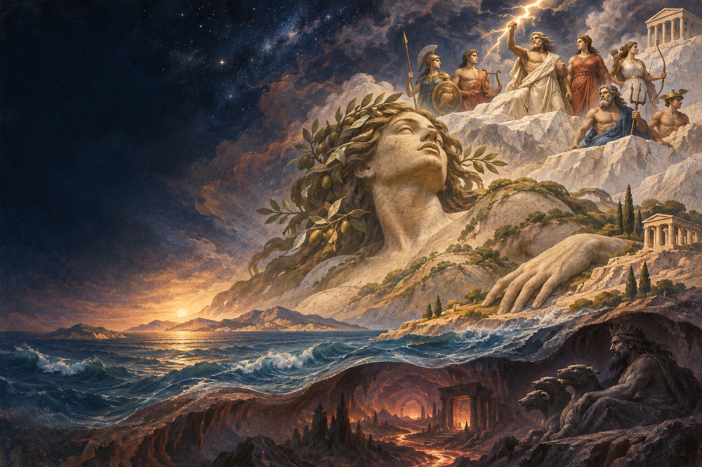
从大地盖娅的第一声呼吸，到特洛伊城下的最后一场决斗——沿着亲缘、盟约与冲突，进入希腊神话的长故事。
点选人物，查看专属立绘、关键关系与对应篇章。
＊本图按“创世—奥林匹斯—英雄—归乡”串起本页核心人物，并非希腊神话全集；珀耳修斯、忒修斯、俄耳甫斯、俄狄浦斯与阿尔戈英雄等支线暂未展开，各地传统也有异说。
这不是一条笔直的家谱，而是一张被欲望、誓言和命运织成的网。九个章节，把相隔数代的神与人串成同一段旅程。
最先出现的是卡俄斯——不是一位有形的神，更像一片尚未分开的深渊。随后，大地盖娅、幽暗的塔耳塔洛斯与使万物彼此靠近的厄洛斯相继显现。这里的“先后”不是父母与子女那样的家谱，而是世界逐渐有了形状。
盖娅从自身生出繁星覆盖的天空乌拉诺斯。天空弯身拥抱大地，泰坦诸神由此降生；然而拥抱也成了囚笼——乌拉诺斯把孩子们压回大地深处。神话的第一场家庭冲突，已经在世界的身体里酝酿。
赫西俄德《神谱》1–132 行
被压迫的盖娅把一柄锋利镰刀交给最年轻的泰坦克洛诺斯。克洛诺斯伏击父亲，夺走天空的王权。可他听见预言：自己的孩子终将推翻自己。于是每当瑞亚生下一个孩子，他便将孩子吞下——赫斯提亚、得墨忒耳、赫拉、哈得斯与波塞冬，全都被困在父亲体内。
第六个孩子宙斯被瑞亚秘密藏到克里特岛。她用襁褓里的石头替换婴儿，骗过克洛诺斯。等宙斯长大，兄弟姊妹一同归来。王座再一次易手：恐惧预言的父亲，正亲手养大自己的继承人。
赫西俄德《神谱》154–506 行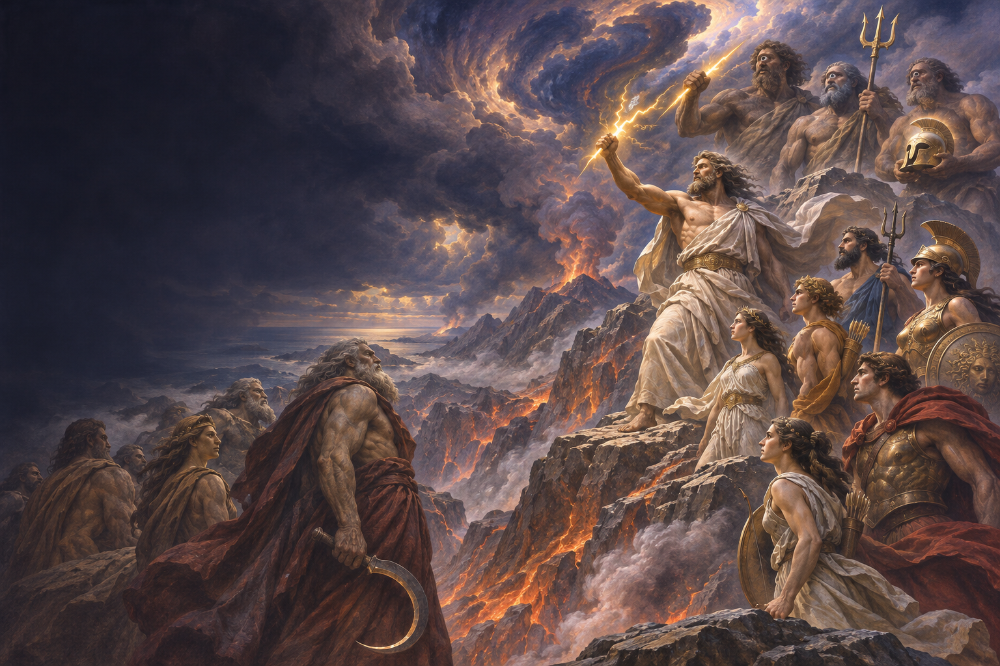
宙斯与泰坦打了十年。被救出的独眼巨人为他锻造雷霆，也把三叉戟交给波塞冬，把隐身之盔交给哈得斯。胜利之后，天空、海洋与冥界各有其主；可盖娅仍不甘心，她与塔耳塔洛斯生下提丰，掀起最后一场风暴。宙斯以雷霆击败这位百首巨怪，把旧世的反抗压回深处。
之后，普罗米修斯——泰坦伊阿珀托斯之子——在人类与宙斯之间耍了一次聪明：他把祭肉和骨头分成两份，让宙斯挑选；宙斯选中裹着油脂的白骨，从此人类把肉留下供自己食用。愤怒的宙斯藏起火种，普罗米修斯便从天界偷来余烬，藏进茴香茎，交到凡人手中。火让人能取暖、烹饪，也让他们拥有了技艺。
宙斯把他锁在高加索山，鹰每日啄食他的肝脏，肝脏又在夜里长回。另一道惩罚落在人间：诸神共同造出潘多拉，把她送到普罗米修斯的兄弟厄庇米修斯身边。哥哥曾劝弟弟不要收宙斯的礼物，厄庇米修斯却接受了。潘多拉打开封存灾厄的陶坛，疾病与劳苦飞散到人世；只有“希望”为何留在坛中，古今读者仍有不同解释。后来，赫拉克勒斯射落恶鹰，普罗米修斯才获释。
“潘多拉之坛”出自《工作与时日》；后世常称它为“潘多拉魔盒”，而“希望”留在坛中的含义并无定论。
赫西俄德《神谱》501–616、820–868 行；《工作与时日》47–105 行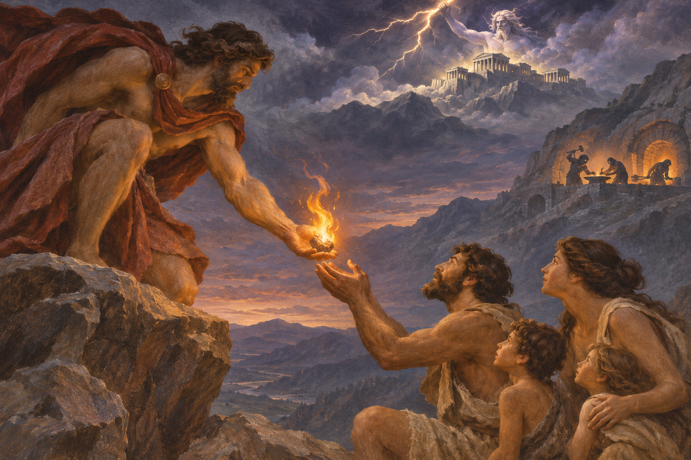
宙斯与赫拉共享王座，兄弟姊妹各守一方：波塞冬统辖海洋，哈得斯管理冥界，得墨忒耳掌谷物，赫斯提亚守护炉火。雅典娜从宙斯头颅中诞生；赫拉曾驱逐怀着孩子的勒托，阿波罗与阿尔忒弥斯最终在海岛提洛出生。狄俄倪索斯后来加入奥林匹斯诸神——“十二位”究竟包括谁，在不同传统里并不完全相同。
神明也会像手足一样争吵。古老颂歌说，赫尔墨斯刚出生就偷走阿波罗的牛群；他用龟甲做成竖琴，阿波罗听见琴声后，兄弟俩以乐器交换牛群，争执变成了友谊。赫尔墨斯由此同时成为牧人、旅者与传信者的守护神。
而荷马《奥德赛》第八卷里，歌者唱起阿佛洛狄忒与阿瑞斯的私会：匠神赫淮斯托斯织出看不见的青铜网，把两人困在榻上，请众神来看这场婚姻丑闻。爱欲、工艺、嘲笑与权力，全挤在一张神的家宴里。
至于爱与美的阿佛洛狄忒，赫西俄德写她从乌拉诺斯的海沫中诞生；《伊利亚特》却称她是宙斯与狄俄涅的女儿。两种起源并存，提醒我们：希腊神话从来不是只有一个版本。
赫西俄德《神谱》；《荷马颂歌·致赫尔墨斯》；荷马《奥德赛》第八卷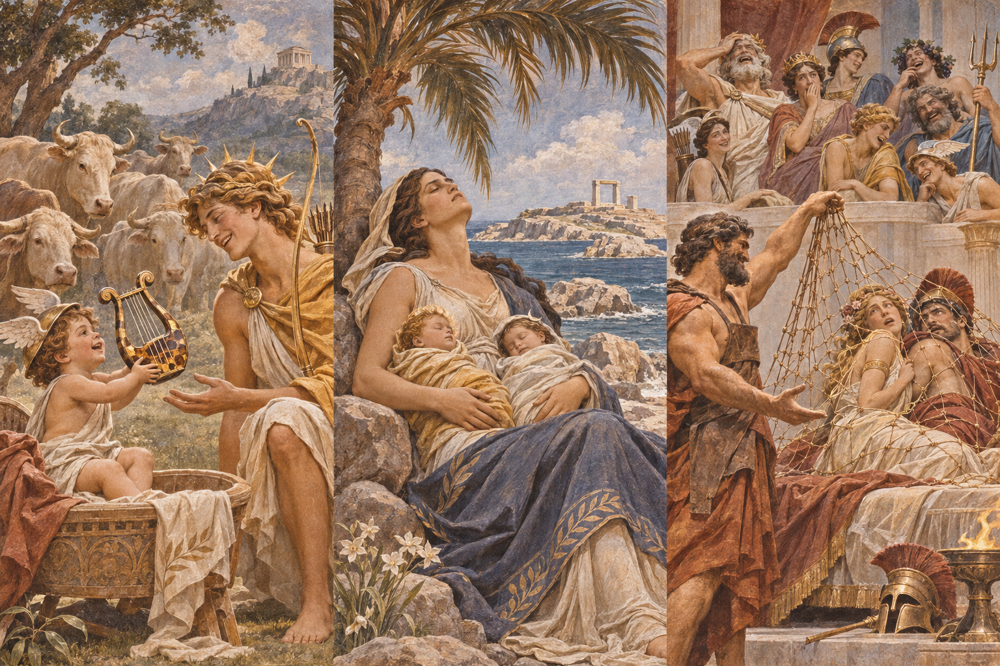
珀耳塞福涅在草地采花时，被冥王哈得斯带往地下。母亲得墨忒耳不肯接受女儿失踪，她点亮火炬走遍大地；因为悲伤而拒绝让种子发芽，众神与凡人都面临饥荒。最后，宙斯出面调停，哈得斯却让珀耳塞福涅吃下石榴籽。她必须在一年中一部分时间回到冥界，另一部分时间与母亲重逢。
古老的《致得墨忒耳颂歌》把离别写成神圣的哀歌；后世读者又从女儿的往返中，看见种子入土、谷物复生的节律。季节并非惩罚，而是失去与重逢之间反复发生的约定。
《致得墨忒耳颂歌》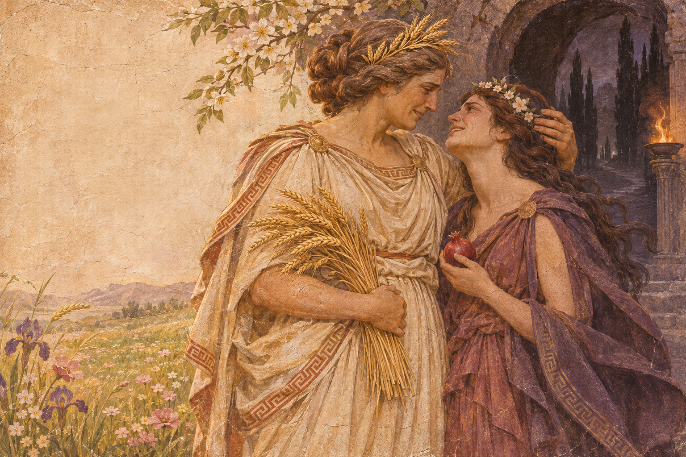
宙斯与凡人阿尔克墨涅生下赫拉克勒斯。赫拉对丈夫的私情怀恨在心，苦难因此从他出生前便开始。一次疯狂使赫拉克勒斯伤害至亲，他来到德尔斐求问赎罪之路，依照神谕完成十二项劳役。这里选取四项作例：制服刀枪不能伤害的涅墨亚狮子，斩杀断头又会再生的九头蛇，清理积年粪秽，还要远行取回金苹果。每一项都不只是力气的较量，也逼他学会耐心、计谋与求助。希腊人崇敬他，既因为超人的力量，也因为他承受苦难后仍继续走下去。
伪阿波罗多洛斯《书库》2.4–2.7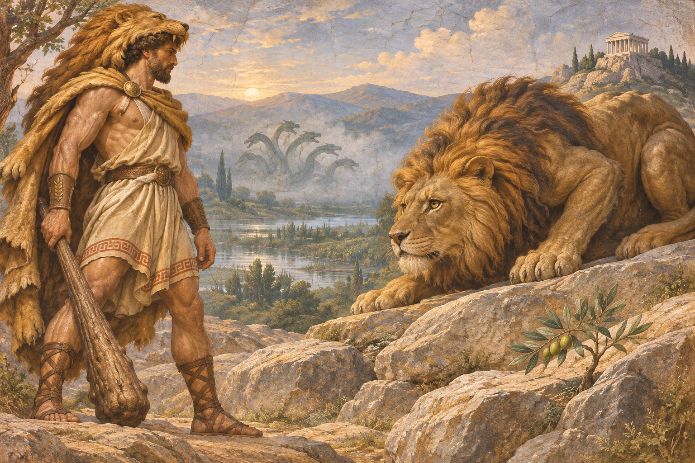
佩琉斯与海中女神忒提斯举行婚礼，却没有邀请不和女神厄里斯。她把一枚刻着“献给最美者”的金苹果抛进宴席。赫拉许诺王权，雅典娜许诺战场胜利，阿佛洛狄忒许诺把世间最美的女人许给帕里斯。宙斯把裁决交给特洛伊王子；帕里斯伸手接过苹果，也选择了阿佛洛狄忒的承诺。他随后带走斯巴达王后海伦——墨涅拉俄斯的妻子。神的婚宴里一句偏袒，最终把希腊舰队引到特洛伊城下。
这一段主要由《塞浦路斯》史诗与后世摘要传下，并非《伊利亚特》正文；关于海伦究竟被带走还是自愿离开，传统并不一致。
伪阿波罗多洛斯《书库》“帕里斯的裁决”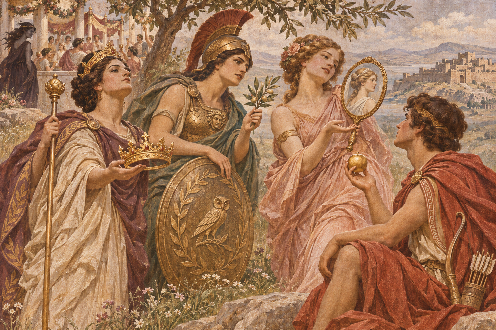
《伊利亚特》不是十年战争的全景，而是末期数周里，阿喀琉斯如何被愤怒占据。联军统帅阿伽门农夺走布里塞伊斯后，阿喀琉斯退出战场；他的战友帕特罗克洛斯战死，他才重返战阵，与特洛伊王子赫克托耳对决。赫克托耳的父亲普里阿摩斯冒险来到敌营，恳求阿喀琉斯归还儿子的遗体。英雄终于停下复仇，两位敌人一同哭泣。
神明并未站在同一边：赫拉与雅典娜偏向希腊军，阿波罗与阿佛洛狄忒保护特洛伊。可在诗歌收束时，愤怒暂时退场，悲悯让敌对双方拥有共同的哀悼。
荷马《伊利亚特》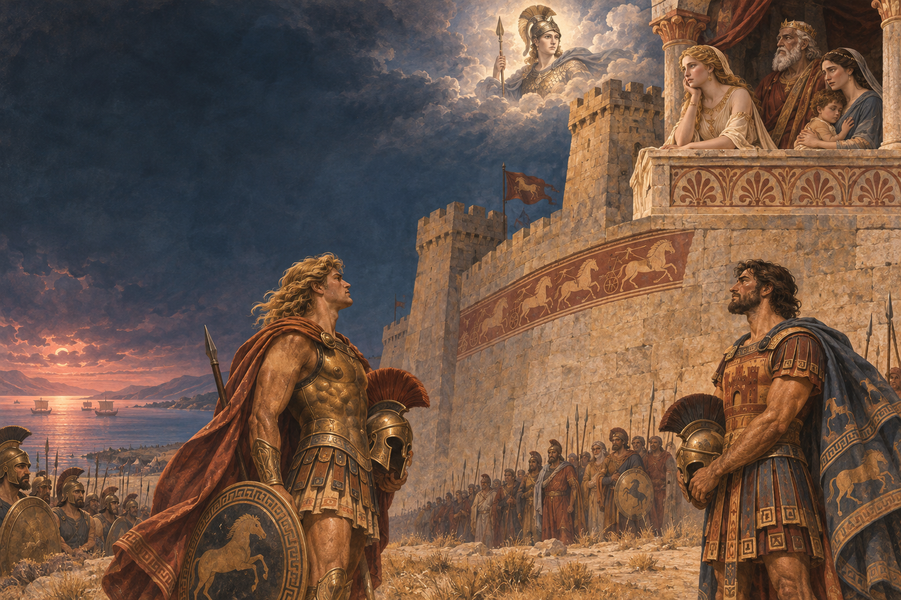
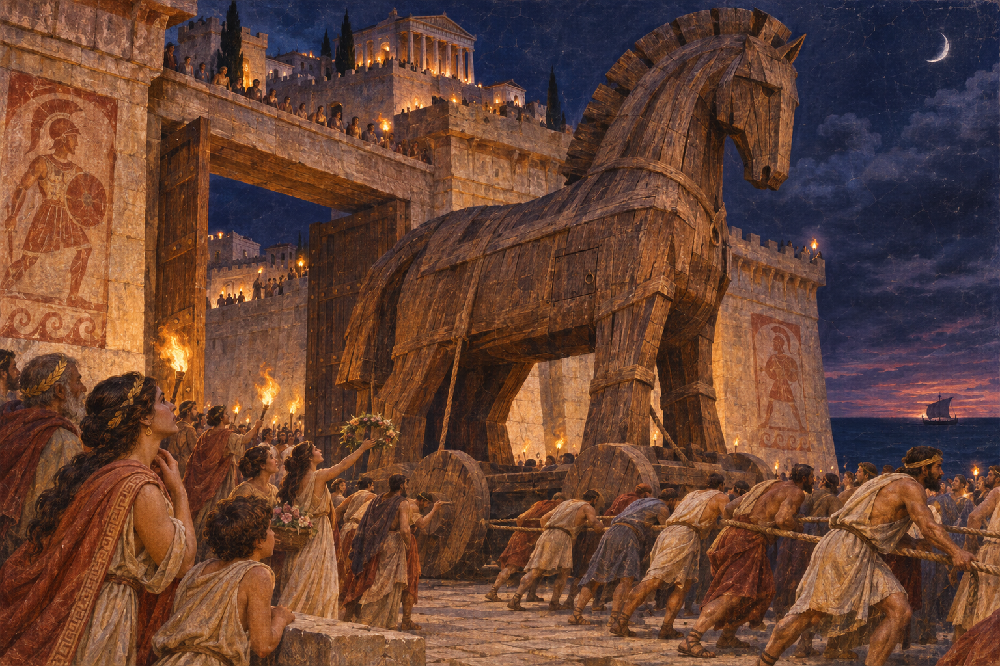
《伊利亚特》停在赫克托耳的葬礼；战争结局由别的诗歌续写。荷马《奥德赛》第八卷让歌者唱起木马计：奥德修斯的计谋把希腊战士送入城中，也让听见这首歌的奥德修斯在宴席上落泪。
特洛伊陷落后，奥德修斯用了十年才回到伊萨卡。逃出波塞冬之子波吕斐摩斯的洞穴后，他得到风神阿伊俄洛斯赠送的风囊；同伴误以为里面装着宝物，打开后，逆风把船队吹回原处。女巫喀耳刻先把同伴变成猪，又恢复他们的模样，并指引奥德修斯前往冥府。亡灵先知忒瑞西阿斯告诉他：归途仍有希望，但绝不可伤害太阳神赫利俄斯的牛群。
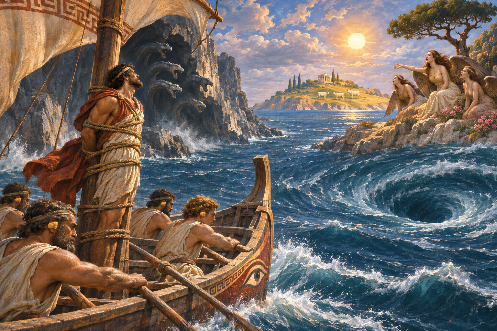
他让同伴用蜡封耳，自己被绑在桅杆上，才听过海妖塞壬的歌；接着，船队在斯库拉与卡律布狄斯之间择路，六名水手被岩壁上的多首海怪夺走。疲惫的船员最终登上忒里那基亚岛，违背禁令吃了赫利俄斯的神牛。宙斯击沉船只，奥德修斯成为唯一幸存者，漂到宁芙卡吕普索的岛上。
宙斯最终命卡吕普索放人。海难后的奥德修斯被法伊阿基亚王女瑙西卡发现；她的父亲阿尔基诺俄斯设宴款待他，并派船把他送回伊萨卡。雅典娜让他以乞丐模样回到家中；佩涅洛佩以织布和试弓拖住求婚者，忒勒马科斯与父亲并肩夺回家园。最后，妻子凭一张只有他们熟悉的床认出丈夫。漫长归途，终于落在一个家愿意继续接纳他的地方。
荷马《奥德赛》第九至十三卷、第六至八卷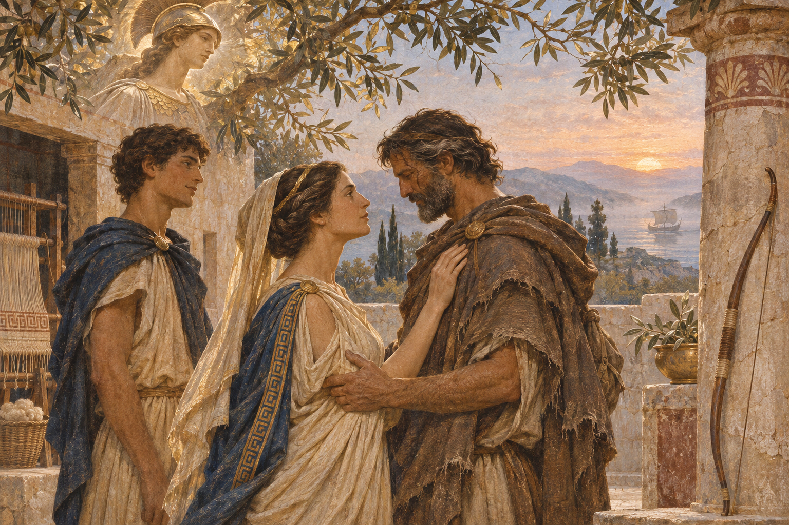
一代神推翻另一代神；一段远行，又把名字送回家族谱系。
故事没有真的结束，它只是在下一次讲述中换了一个入口。
古代诗人留下的是彼此交叠的传统，而非一套统一教典。本页以早期文本为主线；创世谱系、珀耳塞福涅往返和特洛伊战争前因，都可能在不同作品中出现异文。
本页讲的是“创世—奥林匹斯—赫拉克勒斯—特洛伊—奥德修斯归乡”主线，并非希腊神话全集；珀耳修斯、忒修斯、俄耳甫斯、俄狄浦斯与阿尔戈英雄等支线尚未展开。人物立绘和故事场景为原创生成作品。